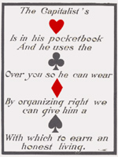

Chapter 17 - What's Going On (May 1965)
Here is an excerpt from the Redwood Ripsaw that I wrote in May 1965. The next chapter contains a quote from the works of Major general Smedley Butler, former Commandant of the US Marines.
There is a lot of talk these days of American Imperialism, Freedom, Democracy, Socialism, Free Enterprise, etc.
The shortest and best definition of imperialism that I know of is that it is "the export of capital to the sources of raw material." In effect this means that Yankee money goes to, for instance, Santo Lomingo in the form of investments in sugar plantations, refineries, etc. As labor is just another cost item, anyplace in the "free world", it must be obtained as cheaply as possible. This policy, "Cheap labor" brings on labor unrest, so, the US Government grants "aid" to, for instance, the Dominican Government. This puppet government then uses the aid money to hire more police, increase its army in order to suppress the unrest. This aid money is really paid by the US taxpayer-for the greater glory of the private enterprizer involved. Should, by any chance, the Dominican Government stand up for its own people it is promptly labeled "Communist" and the US marines are ordered in, in order to "defend Freedom against Communist aggression."
And now we have the "Johnson Doctrine" as given out by President [Lyndon] Johnson that, "we will not allow any Communist governments in this hemisphere (or any OTHER hemispheres judging from events in Vietnam). The "Ripsaw" believes in the right of "self determination for all the people in the world". If they wish to set up Communist governments they have every right to do so. We Americans also have that inherent right-or have we? I am afraid that property rights have superceded human rights a long time ago in this country.
Websters definition of Communism and Socialism merely implies that they mean, "producing property held in common" that is Public property, rather than Private property.
Democracy would seem to mean that the people have the right to a say-but do we? I was once employed at the sawmill of the Shevlin-Hixon Company at Bend, Oregon. They sold their mill to the Brooks-Scanlan Company throwing 2,000 men out of work. The crew was not consulted as it was "none of their business", and it wasn't! So much for Democracy!
If the general public owned the means of production, it would not be considered "democratic" by the big shots!
The various brands of Socialists the world around seem to think we can "peacefully evolve" into a Socialist society, that is by means of moral persuasion. "Not so," say the 'way out cats', the Marxist-Leninists. They say that it will require a complete social revolution by a revolt of the workers, and their allies to not only take over the means of production, but to also set up a dictatorship of labor to replace the present dictatorship of capital. To date, history has more or less confirmed the correctness of this theory. This editor remembers trying to put a skunk out of a bunk house with moral persuasion-but it backfired. Well-so much for terms and the meaning of all this present day ruction in this world.
As I said before, that system that produces the best living standard for the most people will prevail in spite of hell and high water, and in spite of the hysterical shenanigans of a frightened master class. I welcome this competition, as I think we all should, and let the best one win, or would you rather have the WORST one win? Most Americans don't seem to realize that we have a big business Government in the US. Sure, you have "free" elections and you are free to vote for one or the other parties of big business. Then, too, the news media (owned by this same big bizz) helps you make up their mind.
If this all sounds a bit strong, remember this: it is so, but most newspapers, (owned by big bizz) approach the matter more or less like a cat tackles a bowl of hot porridge. Yours for clarity!